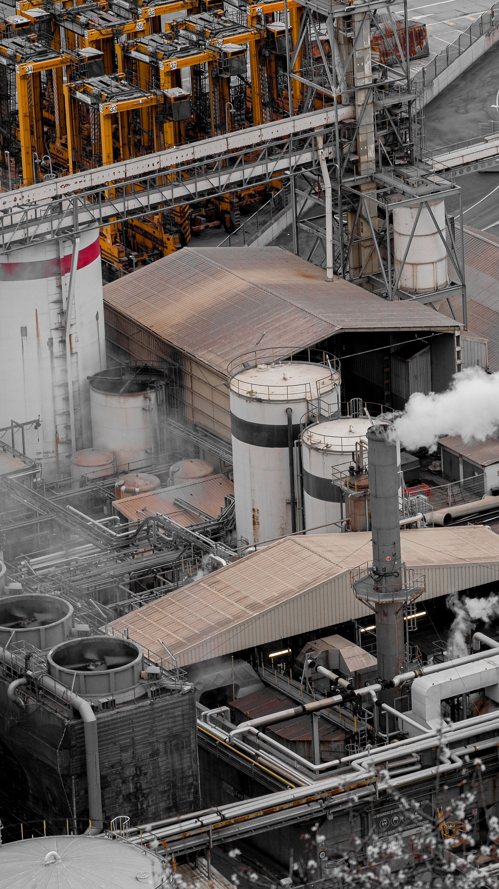
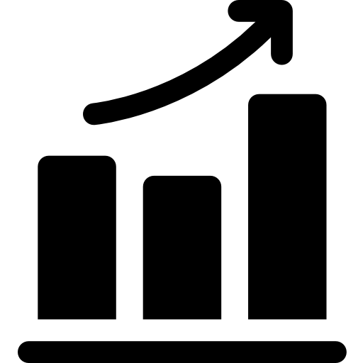

Estrategias para una producción inteligente
En el competitivo sector de la manufactura de plásticos, la eficiencia operativa no es solo una ventaja, es una necesidad. Los problemas como el desperdicio de materia prima, los retrasos en las líneas de inyección y extrusión, y los altos tiempos muertos afectan directamente la rentabilidad y la satisfacción del cliente.
Este portal está diseñado para guiar a nuestra empresa hacia la transformación industrial. Aquí exploraremos las principales herramientas, metodologías y estrategias de la Ingeniería Industrial para diagnosticar fallas, optimizar recursos y garantizar un flujo de trabajo continuo y de alta calidad.

Conoce las áreas de la Ingeniería Industrial
-
Gestión y planificación de la producción
Organización estratégica de los recursos para cumplir con las cuotas de fabricación de productos plásticos a tiempo.
Ir a Producción -
Gestión y control de calidad
Métodos para asegurar que los artículos fabricados cumplan con los estándares sin presentar defectos.
Ir a Calidad -
Logística e inventarios
Administración del flujo de materias primas (resinas) y productos terminados para evitar desabastecimientos.
Ir a Logística -
Lean Manufacturing

Filosofía orientada a la eliminación de desperdicios para maximizar el valor entregado al cliente.
Ir a Lean Manufacturing -
Mantenimiento industrial
Estrategias para cuidar la maquinaria y evitar paradas inesperadas en las inyectoras.
Ir a Mantenimiento -
Productividad e indicadores
Medición del desempeño operativo mediante KPIs para la toma de decisiones basada en datos.
Ir a Productividad